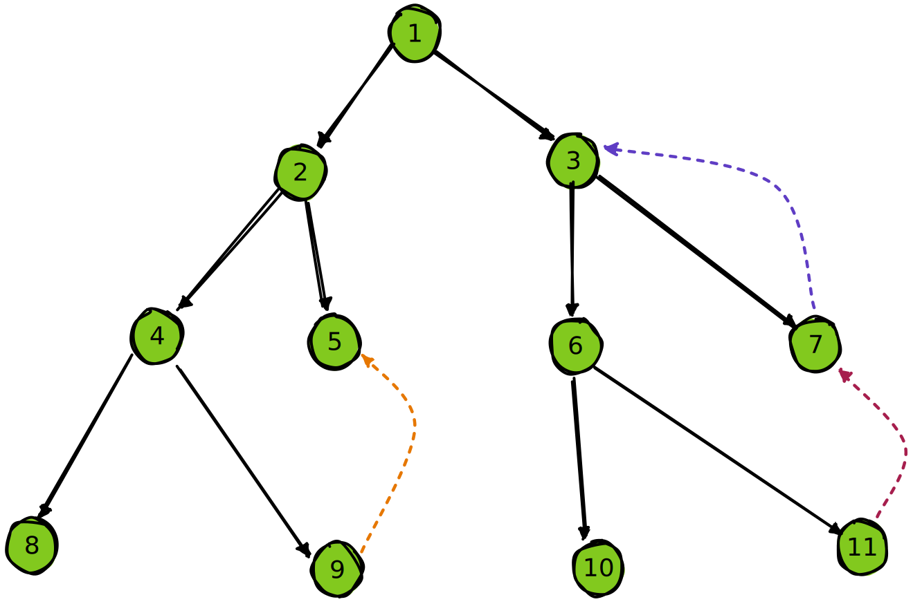

tarjan
理解 tarjan 和缩点
写了个证明在知乎：Tarjan scc 证明

tarjan 求强连通分量
理解这个过程的关键在于以 dfs 搜索树和搜索栈的视角来看待图遍历
众所周知 dfs 一个图的过程可以看作一棵树
- 问：如果树的一个节点 可以延申一条边到 ， 是 的祖先，说明什么
- 答：说明 和 位于同一个强连通分量
- 问：如果 不是 的祖先，说明什么
- 答：看情况， 能连 说明 和 在同一个强连通分量，而 能连 什么也说明不了
- 问：是什么造成了这种差异
- 答：因为 与 强连通， 是 的祖先
- 问：强连通说明什么
- 答： 和 强连通，从某种意义上可以将 与 看作同一个点
- 问：然后呢
- 答：所以 实际上可以看作就是 的祖先
- 问：有个问题，如果 dfs 的过程中，先发现 能连接 ，然后才发现 能连 ，可怎么办
- 答：这种情况不会出现
- 问：为什么
- 答：因为如果 和 在同一个强连通分量，那么当 还在搜索栈里的时候，一定有办法碰到
- 问：也就是说不可能出现 没发现 跟自己在同一个强连通分量里，反而要通过后续的 来间接发现的情况
- 答：对
- 问：所以当看到 能碰到 的时候直接无视就好了
- 答：对。因为如果 能碰到 ，但 又不在 的子树里，这说明 已经遍历完了。 这也说明 不在 的子树里。所以假如 能与 强连通，那么唯一的可能是他们都至少与 强连通， 是他们的公共祖先
- 问：所以即使 和 强连通，他们也有可能不在对方的子树里
- 答：对。可以想象这样一种情况： 和 强连通，但他们之间仅仅由一个节点 连接，没有其他互相到达的路径。如果此时 dfs 不巧以 作为二者的祖先来遍历，那么由于每个节点都只在 dfs 中出现一次， 和 不能通过 来互相抵达
- 问：是搜索剪枝导致它这样的
- 答：是的
- 问：那假如 和 强连通，则他们一定都与 强连通吗？我的意思是，他们有没有可能通过其他节点来连接起来
- 答：可以分情况解答：
- 若 和他们其他的公共祖先，比如 强连通，那么 一定和 也强连通，这很显然
- 若 和 通过 强连通起来，那么在 dfs 的过程里， 应该是 和 的公共祖先，这与现在的情况矛盾
- 问：我再想想 #沉淀
- 答：如果从结果倒推，当 dfs 接触到一坨强连通分量时，碰到的第一个节点 就应该是该强连通分量里其他所有节点的祖先。这很自然，因为从 一定能到达其余所有节点

- 问：也就是说，从直观上来看，一个强连通分量在 dfs 树上一定也是连通的
- 答：是的，只要 dfs 搜索树长成了这样，并且 和 不连通，那么就算 跟 连出了花，他们也一定不连通
- 问：因为如果 和 连通，那么他们一定都和 连通。同样如果 和 连通，则他们要么一方在另一方的子树里，要么有连通的公共祖先
- 答：对
- 问：是不是如果 和 在不同的子树，但他们连通，则他们一定有且仅有唯一的公共祖先
- 答：并不，比如他们可以和最小公共祖先的父节点也连通